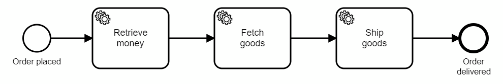
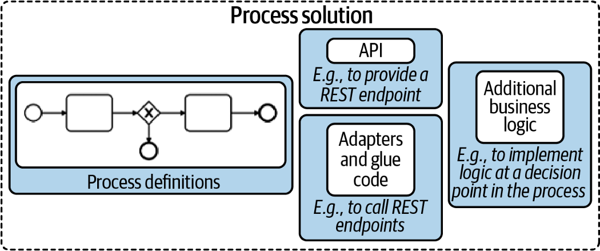

Writing good workers
Service tasks within Camunda 8 require you to set a task type and implement job workers who perform whatever needs to be performed. This describes that you might want to:
- Write all glue code in one application, separating different classes or functions for the different task types.
- Think about idempotency and read or write as little data as possible from/to the process.
- Write non-blocking (reactive, async) code for your workers if you need to parallelize work. Use blocking code only for use cases where all work can be executed in a serialized manner. Don’t think about configuring thread pools yourself.
Organizing glue code and workers in process solutions
Assume the following order fulfillment process, that needs to invoke three synchronous REST calls to the responsible systems (payment, inventory, and shipping) via custom glue code:

Should you create three different applications with a worker for one task type each, or would it be better to process all task types within one application?
As a rule of thumb, we recommend implementing all glue code in one application, which then is the so-called process solution (as described in Practical Process Automation). This process solution might also include the BPMN process model itself, deployed during startup. Thus, you create a self-contained application that is easy to version, test, integrate, and deploy.

Figure taken from Practical Process AutomationThinking of Java, the three REST invocations might live in three classes within the same package (showing only two for brevity):
public class RetrieveMoneyWorker {
@JobWorker(type = "retrieveMoney", autoComplete = false)
public void retrieveMoney(final JobClient client, final ActivatedJob job) {
// ... code
}
}
public class FetchGoodsWorker {
@JobWorker(type = "fetchGoods", autoComplete = false)
public void fetchGoods(final JobClient client, final ActivatedJob job) {
// ... code
}
}
You can also pull the glue code for all task types into one class. Technically, it does not make any difference and some people find that structure in their code easier. If in doubt, the default is to create one class per task type.
There are exceptions when you might not want to have all glue code within one application:
- You need to specifically control the load for one task type, like scaling it out or throttling it. For example, if one service task is doing PDF generation, which is compute-intensive, you might need to scale it much more than all other glue code. On the other hand, it could also mean limiting the number of parallel generation jobs due to licensing limitations of your third-party PDF generation library.
- You want to write glue code in different programming languages, for example, because writing specific logic in a specific language is much easier (like using Python for certain AI calculations or Java for certain mainframe integrations).
In this case, you would spread your workers into different applications. Most often, you might still have a main process solution that will also still deploy the process model. Only specific workers are carved out.
Thinking about transactions, exceptions and idempotency of workers
Visit dealing with problems and exceptions to gain a better understanding of how workers deal with transactions and exceptions to the happy path, and find more details on how to write idempotent workers.
Data minimization in workers
If performance or efficiency matters in your scenario, there are two rules about data in your workers you should be aware of:
- Minimize what data you read for your job. In your job client, you can define which process variables you will need in your worker, and only these will be read and transferred, saving resources on the broker as well as network bandwidth.
- Minimize what data you write on job completion. You should explicitly not transmit the input variables of a job upon completion, which might happen easily if you simply reuse the map of variables you received as input for submitting the result.
Not transmitting all variables saves resources and bandwidth, but serves another purpose as well: upon job completion, these variables are written to the process and might overwrite existing variables. If you have parallel paths in your process (e.g. parallel gateway, multiple instance) this can lead to race conditions that you need to think about. The less data you write, the smaller the problem.
Scaling workers
If you need to process a lot of jobs, you need to think about optimizing your workers.
Workers can control the number of jobs retrieved at once. In a busy system it makes sense to not only request one job, but probably 20 or even up to 50 jobs in one remote request to the workflow engine, and then start working on them locally. In a lesser utilized system, long polling is used to avoid delays when a job comes in. Long polling means the client’s request to fetch jobs is blocked until a job is received (or some timeout hits). Therefore, the client does not constantly need to ask.
You will have jobs in your local application that need to be processed. The worst case in terms of scalability is that you process the jobs sequentially one after the other. While this sounds bad, it is still a valid approach for many use cases, as most projects do not need any parallel processing in the worker code as they simply do not care whether a job is executed a second earlier or later. Think of a business process that is executed only some hundred times per day and includes mostly human tasks — a sequential worker is totally sufficient. In this case, you can skip this paragraph section.
However, you might need to do better and process jobs in parallel and utilize the full power of your worker’s CPUs. In such a case, you should read on and understand the difference between writing blocking and non-blocking code.
Blocking / synchronous code and thread pools
With blocking code a thread needs to wait (is blocked) until something finishes before it can move on. In the above example, making a REST call requires the client to wait for IO — the response. The CPU cannot compute anything during this time period, however, the thread cannot do anything else.
Assume that your worker shall invoke 20 REST requests, each taking around 100ms, this will take 2s in total to process. Your throughput can’t go beyond 10 jobs per second with one thread.
A common approach to scaling throughput beyond this limit is to leverage a thread pool. This works as blocked threads are not actively consuming CPU cores, so you can run more threads than CPU cores — since they are only waiting for I/O most of the time. In the above example with 100ms latency of REST calls, having a thread pool of 10 threads increases throughput to 100 jobs/second.
The downside of using thread pools is that you need to have a good understanding of your code, thread pools in general, and the concrete libraries being used. Typically, we do not recommend configuring thread pools yourself. If you need to scale beyond the linear execution of jobs, leverage reactive programming.
Non-blocking / reactive code
Reactive programming uses a different approach to achieve parallel work: extract the waiting part from your code.
With a reactive HTTP client you will write code to issue the REST request, but then not block for the response. Instead, you define a callback as to what happens if the request returns. Most of you know this from JavaScript programming. Thus, the runtime can optimize the utilization of threads itself, without you the developer even knowing.
Recommendation
In general, using reactive programming is favorable in most situations where parallel processing is important. However, we sometimes observe a lack of understanding and adoption in developer communities, which might hinder adoption in your environment.
Client library examples
Let’s go through a few code examples using Java, Node.js, and C#, using the corresponding client libraries. All code is available on GitHub and a walk through recording is available on YouTube.
Java
Using the Java Client you can write worker code like this:
client.newWorker().jobType("retrieveMoney")
.handler((jobClient, job) -> {
//...
}).open();
Spring Zeebe is a community-maintained project.
The community-maintained Spring Zeebe integration provides a more elegant way of writing this, but also uses a normal worker from the Java client underneath. In this case, your code might look like this:
@JobWorker(type = "retrieveMoney", autoComplete = false)
public void retrieveMoney(final JobClient client, final ActivatedJob job) {
//...
}
In the background, a worker starts a polling component and a thread pool to handle the polled jobs. The default thread pool size is one. If you need more, you can enable a thread pool:
ZeebeClient client = ZeebeClient.newClientBuilder()
.numJobWorkerExecutionThreads(5)
.build();
Or, in the community-maintained Spring Zeebe project:
zeebe.client.worker.threads=5
Now, you can leverage blocking code for your REST call, for example, the RestTemplate inside Spring:
@JobWorker(type = "rest", autoComplete = false)
public void blockingRestCall(final JobClient client, final ActivatedJob job) {
LOGGER.info("Invoke REST call...");
String response = restTemplate.getForObject( // <-- blocking call
PAYMENT_URL, String.class);
LOGGER.info("...finished. Complete Job...");
client.newCompleteCommand(job.getKey()).send()
.join(); // <-- this blocks to wait for the response
LOGGER.info(counter.inc());
}
Doing so limits the degree of parallelism to the number of threads you have configured. You can observe in the logs that jobs are executed sequentially when running with one thread (the code is available on GitHub):
10:57:00.258 [pool-4-thread-1] Invoke REST call…
10:57:00.258 [ault-executor-0] Activated 32 jobs for worker default and job type rest
10:57:00.398 [pool-4-thread-1] …finished. Complete Job…
10:57:00.446 [pool-4-thread-1] …completed (1). Current throughput (jobs/s ): 1
10:57:00.446 [pool-4-thread-1] Invoke REST call…
10:57:00.562 [pool-4-thread-1] …finished. Complete Job…
10:57:00.648 [pool-4-thread-1] …completed (2). Current throughput (jobs/s ): 2
10:57:00.648 [pool-4-thread-1] Invoke REST call…
10:57:00.764 [pool-4-thread-1] …finished. Complete Job…10:57:00.805 [pool-4-thread-1] …completed (3). Current throughput (jobs/s ): 3
If you experience a large number of jobs, and these jobs are waiting for IO the whole time — as REST calls do — you should think about using reactive programming. For the REST call, this means for example the Spring WebClient:
@JobWorker(type = "rest", autoComplete = false)
public void nonBlockingRestCall(final JobClient client, final ActivatedJob job) {
LOGGER.info("Invoke REST call...");
Flux<String> paymentResponseFlux = WebClient.create()
.get().uri(PAYMENT_URL).retrieve()
.bodyToFlux(String.class);
// non-blocking, so we register the callbacks (for happy and exceptional case)
paymentResponseFlux.subscribe(
response -> {
LOGGER.info("...finished. Complete Job...");
client.newCompleteCommand(job.getKey()).send()
// non-blocking, so we register the callbacks (for happy and exceptional case)
.thenApply(jobResponse -> { LOGGER.info(counter.inc()); return jobResponse;})
.exceptionally(t -> {throw new RuntimeException("Could not complete job: " + t.getMessage(), t);});
},
exception -> {
LOGGER.info("...REST invocation problem: " + exception.getMessage());
client.newFailCommand(job.getKey())
.retries(1)
.errorMessage("Could not invoke REST API: " + exception.getMessage()).send()
.exceptionally(t -> {throw new RuntimeException("Could not fail job: " + t.getMessage(), t);});
}
);
}
This code uses the reactive approach to use the Zeebe API:
client.newCompleteCommand(job.getKey()).send()
.thenApply(jobResponse -> {
counter.inc();
return jobResponse;
})
.exceptionally(t -> {
throw new RuntimeException("Could not complete job: " + t.getMessage(), t);
});
With this reactive glue code, you don’t need to worry about thread pools in the workers anymore, as this is handled under the hood from the frameworks or the Java runtime. You can observe in the logs that many jobs are now executed in parallel — and even by the same thread in a loop within milliseconds.
10:54:07.105 [pool-4-thread-1] Invoke REST call…
[…] 30–40 times!
10:54:07.421 [pool-4-thread-1] Invoke REST call…
10:54:07.451 [ctor-http-nio-3] …finished. Complete Job…
10:54:07.451 [ctor-http-nio-7] …finished. Complete Job…
10:54:07.451 [ctor-http-nio-2] …finished. Complete Job…
10:54:07.451 [ctor-http-nio-5] …finished. Complete Job…
10:54:07.451 [ctor-http-nio-1] …finished. Complete Job…
10:54:07.451 [ctor-http-nio-6] …finished. Complete Job…
10:54:07.451 [ctor-http-nio-4] …finished. Complete Job…
[…]
10:54:08.090 [pool-4-thread-1] Invoke REST call…
10:54:08.091 [pool-4-thread-1] Invoke REST call…
[…]
10:54:08.167 [ault-executor-2] …completed (56). Current throughput (jobs/s ): 56, Max: 56
10:54:08.167 [ault-executor-1] …completed (54). Current throughput (jobs/s ): 54, Max: 54
10:54:08.167 [ault-executor-0] …completed (55). Current throughput (jobs/s ): 55, Max: 55
These observations yield the following recommendations:
| Blocking Code | Reactive Code | |
|---|---|---|
| Parallelism | Some parallelism is possibly by a thread pool, which is used by the client library. The default thread pool size is one, which needs to be adjusted in the config in order to scale. | A processing loop combined with an internal thread pool, both are details of the framework and runtime platform. |
| Use when | You don't have requirements to process jobs in parallel | You need to scale and have IO-intensive glue code (e.g. remote service calls like REST) |
| Your developers are not familiar with reactive programming | This should be the default if your developer are familiar with reactive programming. |
Node.js client
Using the Node.js client, your worker code will look like this, assuming that you use Axios to do rest calls (but of course any other library is fine as well):
zbc.createWorker({
taskType: "rest",
taskHandler: (job) => {
console.log("Invoke REST call...");
axios
.get(PAYMENT_URL)
.then((response) => {
console.log("...finished. Complete Job...");
job.complete().then((result) => {
incCounter();
});
})
.catch((error) => {
job.fail("Could not invoke REST API: " + error.message);
});
},
});
This is reactive code. And a really interesting observation is that reactive programming is so deep in the JavaScript language that it is impossible to write blocking code, even code that looks blocking is still executed in a non-blocking fashion.
Node.js code scales pretty well and there is no specific thread pool defined or necessary. The Camunda 8 Node.js client library also uses reactive programming internally.
This makes the recommendation very straight-forward:
| Reactive code | |
|---|---|
| Parallelism | Event loop provided by Node.js |
| Use when | Always |
C#
Using the C# client, you can write worker code like this:
zeebeClient.NewWorker()
.JobType("payment")
.Handler(JobHandler)
.HandlerThreads(3)
.Name("MyPaymentWorker")
.Open()
You can observe that you can set a number of handler threads. Interestingly, this is a naming legacy. The C# client uses the Dataflow Task Parallel Library (TPL) to implement parallelism, so the thread count configures the degree of parallelism allowed to TPL in reality. Internally, this is implemented as a mixture of event loop and threading, which is an implementation detail of TPL. This is a great foundation to scale the worker.
You need to provide a handler. For this handler, you have to make sure to write non-blocking code; the following example shows this for a REST call using the HttpClient library:
private static async void NonBlockingJobHandler(IJobClient jobClient, IJob activatedJob)
{
Log.LogInformation("Invoke REST call...");
var response = await httpClient.GetAsync("/");
Log.LogInformation("...finished. Complete Job...");
var result = await jobClient.NewCompleteJobCommand(activatedJob).Send();
counter.inc();
}
The code is executed in parallel, as you can observe in the logs. Interestingly, the following code runs even faster for me, but that’s a topic for another discussion:
private static void NonBlockingJobHandler(IJobClient jobClient, IJob activatedJob)
{
Log.LogInformation("Invoke REST call...");
var response = httpClient.GetAsync("/").ContinueWith( response => {
Log.LogInformation("...finished. Complete Job...");
jobClient.NewCompleteJobCommand(activatedJob).Send().ContinueWith( result => {
if (result.Exception==null) {
counter.inc();
} else {
Log.LogInformation("...could not do REST call because of: " + result.Exception);
}
});
});
}
In contrast to Node.js, you can also write blocking code in C# if you want to (or more probable: it happens by accident):
private static async void BlockingJobHandler(IJobClient jobClient, IJob activatedJob)
{
Log.LogInformation("Invoke REST call...");
var response = httpClient.GetAsync("/").Result;
Log.LogInformation("...finished. Complete Job...");
await jobClient.NewCompleteJobCommand(activatedJob).Send();
counter.inc();
}
The degree of parallelism is down to one again, according to the logs. So C# is comparable to Java, just that the typically used C# libraries are reactive by default, whereas Java still knows just too many blocking libraries. The recommendations for C#:
| Blocking code | Reactive code | |
|---|---|---|
| Parallelism | Some parallelism is possibly by a thread pool, which is used by the client library. | A processing loop combined with an internal thread pool, both are details of the framework and runtime platform. |
| Use when | Rarely, and only if you don't have requirements to process jobs in parallel or might even want to reduce the level or parallelism. | This should be the default |
| Your developers are not familiar with reactive programming | You need to scale and have IO-intensive glue code (e.g. remote service calls like REST) |